library(tidyverse)
library(ggraph)
library(igraph)
library(tidygraph)
library(graphlayouts)
library(RColorBrewer)
library(readxl)
library(writexl)
library(ggpubr)
library(Matrix)
source("functions/get_edge_coord.R")Finpudsning af analyse og visualisering af netværk
ggplot + ggraph
I denne session skal vi se på visualiering af netværk med ggraph-pakken: “En grafisk grammatik for relationel data”, som bygger oven på ggplot2.

Begge dele følger den samme underliggende visualiseringsfilosofi/-grammatik.
Man initialiserer et plot (et underliggende koordinatsystem) og bringer et datasæt i spil
Man tilføjer lag (
geom_*-funktioner), som definerer hvordan data skal repræsenteres.I ggraph() finder der to grupper af lag for hhv. edges og noder
geom_edge_*
geom_node_*
Justerer scaler (for akser, størrelser, farver, gennemsigitighed, former osv.) (
scale_*-funktioner)Ændrer på akse og legends forklaringer med
guides()-funktionen, kombineret med fx.guide_legend()og som tillader os at ændre på hvordan en legend ser ud ellerguide_axis()som tillader os at ændre på hvordan en akse ser ud. I begge tilfælde kan vi gøre brug af forskelligetheme-objekter: fxlegend.positionellerlegend.textkombineret med ettheme_elementsom fxelement_text()Tilføjer prædifinerede temaer med
theme_*-funktioner for hele plottet.
De forskellige muligheder i ggplot kan findes her og det samme for ggraph her
Lad os komme igang.
Til denne session skal I downloade:
scriptet: Scriptet - Session7_new.R
datasættet: Datasættet - finans_den17 som lægges i undermappen /data i din r-projekt-mappe
og funktionen: funktionen - get_edge_coord.R som lægges i undermappen /functions i r-projekt-mappen
Indlæs pakker
Indlæs data
Lad os arbejde med noget vi kender godt. Vi indlæser den17 fra datamappen:
den <- read_csv("data/finans_den17.csv")Rows: 3075 Columns: 10
── Column specification ────────────────────────────────────────────────────────
Delimiter: ","
chr (8): name, affiliation, role, gender, tags, sector, type, description
dbl (2): cvr_person, cvr_affiliation
ℹ Use `spec()` to retrieve the full column specification for this data.
ℹ Specify the column types or set `show_col_types = FALSE` to quiet this message.Konstruktion af netværksmatricer
individ x affiliation matrice:
bi_adj <- xtabs(den, formula = ~name + affiliation, sparse = T)Fra individ x affiliation matricen, kan vi lave to matricer (det er vigtigt at Matrix pakken er læst ind her - library(Matrix))
Individ x individ matricen:
adj_ind <- bi_adj %*% t(bi_adj) affiliation x affiliation matricen:
adj_affil <- t(bi_adj) %*% bi_adjKonstruktion af netværksobjekter
two-mode (bipartite)
fra individ x affiliation matricen (bi_adj) laver vi et bipartite/two-mode netværksobjekt
net_twomode <- bi_adj %>%
graph_from_biadjacency_matrix(, directed = FALSE, multiple = FALSE) %>%
simplify() %>%
as_tbl_graph()
net_twomode# A tbl_graph: 2980 nodes and 3075 edges
#
# A bipartite simple graph with 43 components
#
# Node Data: 2,980 × 2 (active)
type name
<lgl> <chr>
1 FALSE Aage Almtoft
2 FALSE AAge Dragsted
3 FALSE AAke Per-Urban Bäckström
4 FALSE AAse Kogsboell
5 FALSE Ajit Gupte
6 FALSE Alex Pedersen 240
7 FALSE Alfred Moeller Josefsen
8 FALSE Alice Lykke
9 FALSE Allan Bach Pedersen
10 FALSE Allan Bisgaard
# ℹ 2,970 more rows
#
# Edge Data: 3,075 × 2
from to
<int> <int>
1 1 2867
2 2 2954
3 3 2810
# ℹ 3,072 more rowsIndivid-netværk
fra individ x individ matricen (adj_ind) laver vi et one-mode netværk for individer
net_ind <- adj_ind %>%
graph_from_adjacency_matrix(, mode = "undirected", diag = FALSE) %>%
simplify() %>%
as_tbl_graph()
net_ind# A tbl_graph: 2786 nodes and 40603 edges
#
# An undirected simple graph with 43 components
#
# Node Data: 2,786 × 1 (active)
name
<chr>
1 Aage Almtoft
2 AAge Dragsted
3 AAke Per-Urban Bäckström
4 AAse Kogsboell
5 Ajit Gupte
6 Alex Pedersen 240
7 Alfred Moeller Josefsen
8 Alice Lykke
9 Allan Bach Pedersen
10 Allan Bisgaard
# ℹ 2,776 more rows
#
# Edge Data: 40,603 × 2
from to
<int> <int>
1 1 12
2 1 209
3 1 286
# ℹ 40,600 more rowsAffiliation-netværk
net_affil <- adj_affil %>%
graph_from_adjacency_matrix(, mode = "undirected", diag = FALSE) %>%
simplify() %>%
as_tbl_graph()
net_affil# A tbl_graph: 194 nodes and 320 edges
#
# An undirected simple graph with 43 components
#
# Node Data: 194 × 1 (active)
name
<chr>
1 A/S DANSK ERHVERVSINVESTERING
2 ALD Automotive
3 Alm. Brand
4 Alpha Holding
5 ALTOR EQUITY PARTNERS A/S
6 AP Pension
7 Arbejdernes Landsbank
8 ARKITEKTERNES PENSIONSKASSE
9 Bank DNB Nord
10 BDO - Statsautoriseret revisionsaktieselskab (bestyrelse)
# ℹ 184 more rows
#
# Edge Data: 320 × 2
from to
<int> <int>
1 1 38
2 1 170
3 3 15
# ℹ 317 more rowsKomponenter
I det fleste tilfælde vil vi gerne nøjes med at visualere de største komponenter i vores netværk, så vi laver tre reducerede netværksobjekter, som kun indeholder de største komponenter:
net_twomode_l <- net_twomode %>% mutate(comp = group_components()) %>% filter(comp ==1)
net_ind_l <- net_ind %>% mutate(comp = group_components()) %>% filter(comp ==1)
net_affil_l <- net_affil %>% mutate(comp = group_components()) %>% filter(comp ==1)Visualiseringer:
Lad os tage hul på logikken i visualering af netværk med ggraph.
Vi begynder med et simpelt plot: virksomhedsnetværket.
1) Initierer af et plot med ggraph()-funktionen
Først initierer vi et plot med ggraph() funktionen og et netværksobjekt:
Det giver os et øjensynligt tomt plot. Funktionen har dog allerede defineret ét lag, nemlig layout-laget. Da vi ikke har specificeret noget layout har ggraph brugt default layoutet stress
p <- ggraph(net_affil_l)Using "stress" as default layoutp
2) Tegn edges
det næste vi tilføjer er oftest laget med edges. Fordi vi lægger lag-på-lag, er det vigtig hvilken rækkefølge vi gør det i. Visuelt giver det mest mening at lægge edges på først, så de ikke ligger oven på noderne:
Når vi tilføjer lag i ggraph bruger vi geom’er som i ggplot. Der er som nævnt et specifikt sæt af geom’er for edges, geom_edge_*. Oftest vil vi tegne dem som en ‘streg’ og bruger derfor geom_edge_link0 :
p + geom_edge_link0()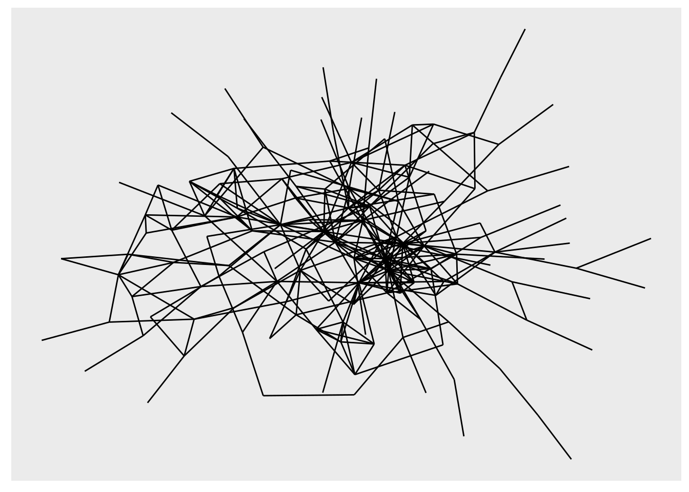
da vi har et relativt stort og dense netværk (der er 320 edges), vil vi måske gerne gøre dem mindre visuelt dominerende. I geom_edge_* funktionerne kan vi ændre på en række parametre:
width (tykkelsen på linjerne)
- som går fra 0 (ingen tykkelse) til uendeligt tykke.
color (farven på linjerne)
- kan være en hex farvekode, fx. #f50e0a (en variant af rød) eller en navngiven farve. (brug evt. funktionen
edit(colors())til at se de navngivne farver i R)
- kan være en hex farvekode, fx. #f50e0a (en variant af rød) eller en navngiven farve. (brug evt. funktionen
alpha (linjernes ‘gennemsigtighed’)
- som går fra 0 til 1 (0 = helt gennemsigtige, 1 = helt optegnede)
Lad os prøve at sætte en farve, en variant af grå, og en tykkelse, 0.3, og en gennemsigtighed, 0.3.
p <- p + geom_edge_link0(color = "grey70", width = 0.3, alpha = 0.3)
p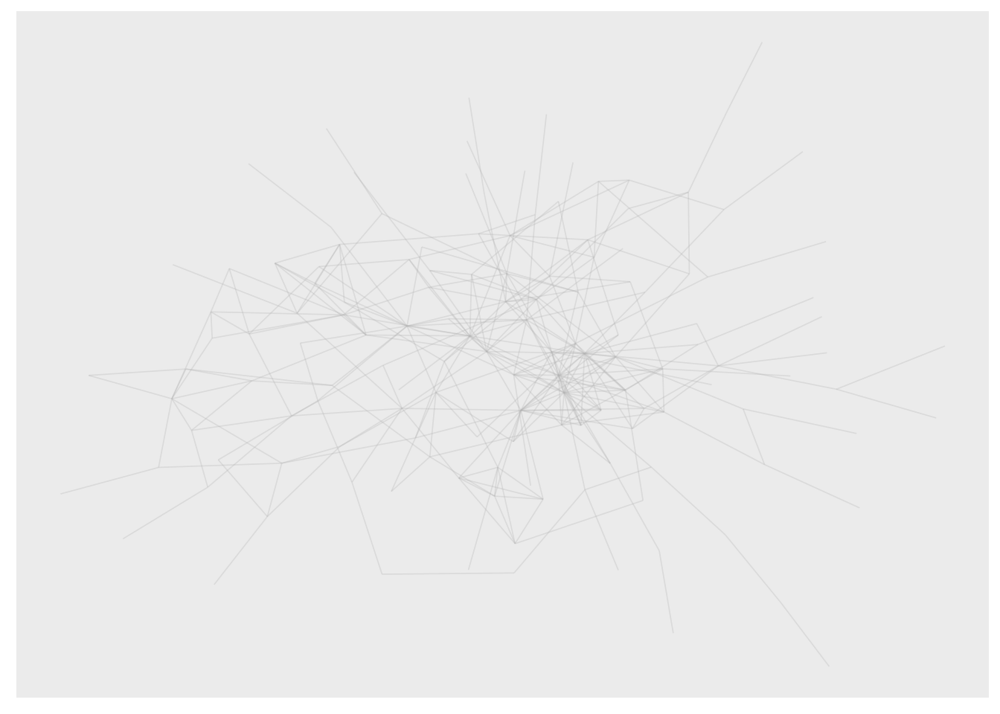
3) Tegn noder
Nu vil vi gerne tilføje laget med noder (i dette tilfælde virksomheder).
Der også et specifikt sæt af geom’er for noder, geom_node_*. Oftest vil vi tegne dem som et ‘punkt’, så vi bruger geom_node_point():
p + geom_node_point()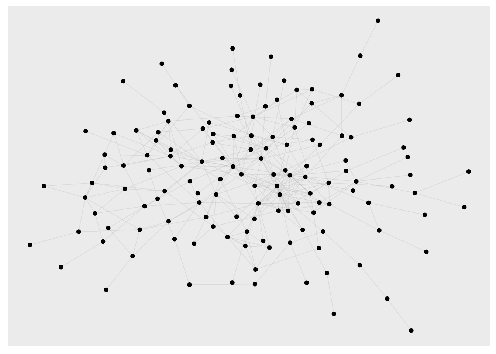
I geom_node_* funktionerne kan vi også ændre på en række parametre:
size (størrelsen på punkterne)
- som går fra 0 (ingen størrelse) til uendelig størrelse.
shape (formen på punktet)
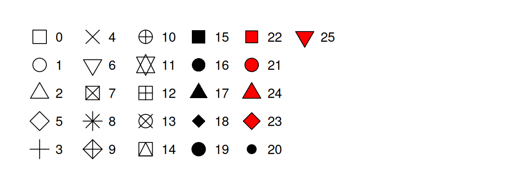
color (farven på punktet/ eller på punktets omkreds - hvis man vælger en af de ‘røde’ shapes fra figuren og sætter en anden fill)
- kan være en hex farvekode, fx. #f50e0a (en variant af rød) eller en navngiven farve. (brug evt. funktionen
edit(colors())til at se de navngivne farver i R)
- kan være en hex farvekode, fx. #f50e0a (en variant af rød) eller en navngiven farve. (brug evt. funktionen
fill (styrer for de røde shapes farven på punktet, mens color så styrer omkredsen)
alpha (linjernes ‘gennemsigtighed’)
- som går fra 0 til 1 (0 = helt gennemsigtige, 1 = helt optegnede)
Lad os sætte en størrelse på 3, en rund shape med farve, nr. 21, en alpha på 0.75, en omkredsfarve (color), sort, og en fill, salmon2.
p <- p + geom_node_point(size = 3, shape = 21, color = "steelblue", fill = "salmon2",alpha = 0.75)
p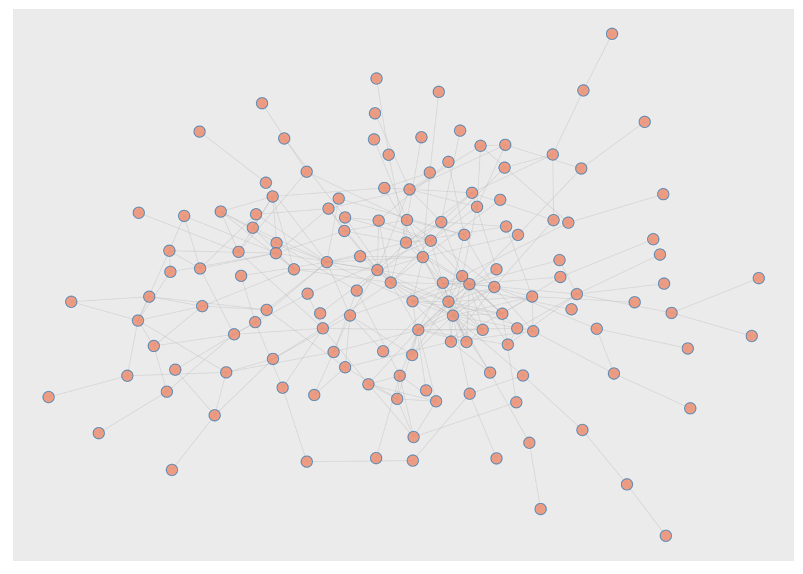
4) Netværkstema (baggrund):
Nu har vi næsten lavet vores simple plot. Der er dog noget med den grå baggrund…. I ggraph ligger der et standard theme til netværksvisualiseringer, theme_graph(), lad os tilføje det.
p <- p + theme_graph()
p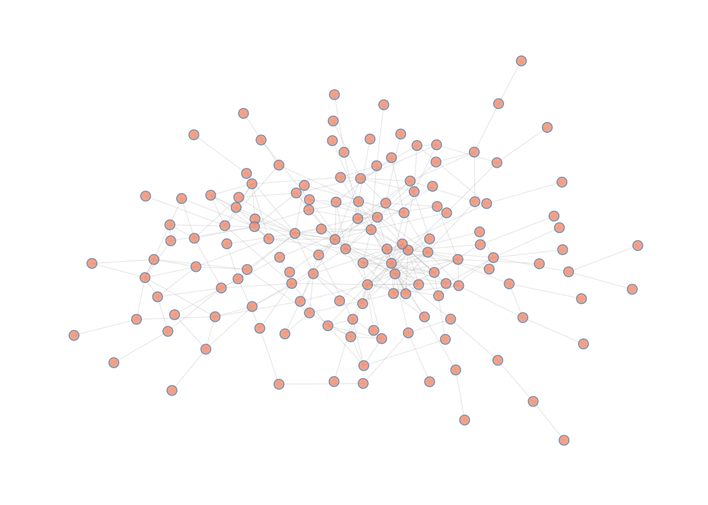
5) Titel mv.
Som det sidte vil vi måske gerne tilføje en forklarende titel til vores visualisering.
p + ggtitle("Virksomhedsnetværket i finanssektoren")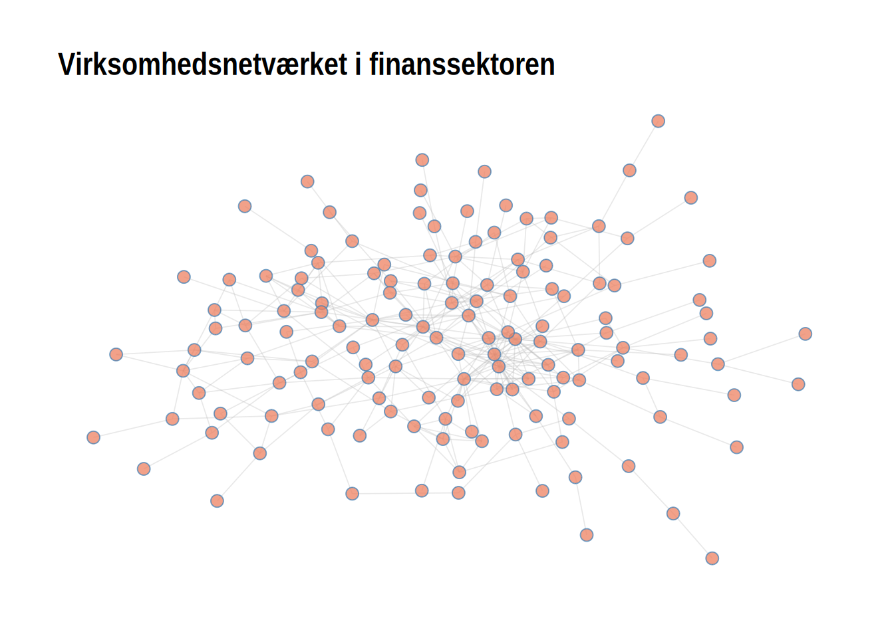
og måske også en undertitel. Det kunne være antallet af noder (eller noget helt andet). Vi vi gerne vil ‘blande’ et tal ind uden at skrive det selv. Fx så vi kan opdatere analysen og køre koden uden at ændre plotkoden, kan vi bruge paste0() til at sætte tekst og outputtet fra en funktion sammen: paste0("n = ", vcount(net_affil_l)) vil sætte “n =” sammen med outputtet fra vcount() som er antallet af noder.
Vi kan også tilføje en caption i hjørnet med labs(caption =) faktisk kan man også bestemme title og subtitle med labs.
#Enten
p + ggtitle("Virksomhedsnetværket i finanssektoren", subtitle = paste0("n = ", vcount(net_affil_l))) + labs(caption = "datakilde: Danish Elitenetwork 2017")
#Eller det hele med labs
p <- p + labs(title = "Virksomhedsnetværket i finanssektoren",
subtitle = paste0("n = ", vcount(net_affil_l)),
caption = "datakilde: Danish Elitenetwork 2017")Opsummerende kan vi gøre det hele på en gang i stedet:
p <- ggraph(net_affil_l) +
geom_edge_link0(color = "grey70", width = 0.3, alpha = 0.3) +
geom_node_point(size = 3, shape = 21, color = "steelblue",
fill = "salmon2",alpha = 0.75) +
theme_graph() +
labs(title = "Virksomhedsnetværket i finanssektoren",
subtitle = paste0("n = ", vcount(net_affil_l)),
caption = "datakilde: Danish Elitenetwork 2017")Using "stress" as default layoutp 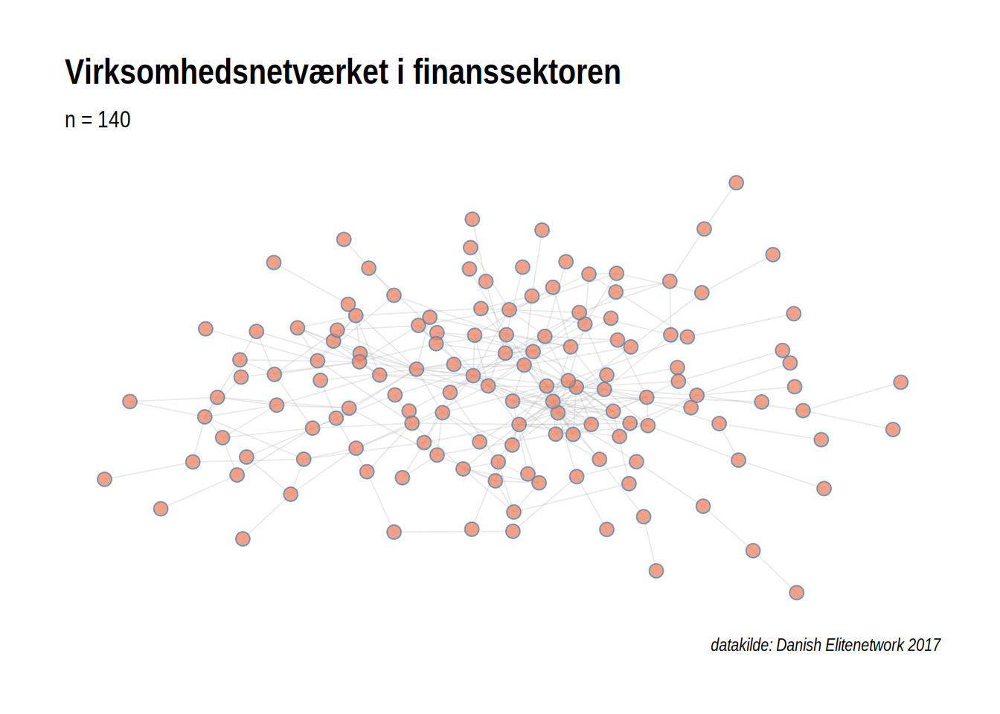
6) Gem plot som en billede fil
ggplot2 har en funktion, der hedder ggsave() som gemmer det aktive plot (eller et bestemt plot objekt) til en sti vi vælger og et filformat vi bestemmer. Hvis den mappe vi ‘sender’ filen til ikke findes, kan man bruge create.dir = TRUE, så laver R mappen.
Jeg vil gerne gemme til min output mappe (der må gerne stå create.dir = TRUE, også selvom den allerede findes). Og det skal være en png fil.
Andre relevante options er height = og width = . Dem kan I skrue på hvis plottet bliver enten for stort elle for lille i den fil i gemmer.
ggsave(filename = "output/simpelt_plot.png", plot = p, height = 6, width = 6, create.dir = TRUE)Visualisering 2.0 - ‘mapping aesthetics’:
Indtil nu har vi sat nogle faste værdier for størrelse og tykkelse mv. Vi kunne fx godt være interesseret i at lade en variabel styre nodernes farve eller størrelse eller lignende.
Lad os derfor først lige tilføje sektor-variablen til vores netværksobjekt som en vertex attribute:
net_affil_l <- net_affil_l %>% left_join(
den %>% select(name = affiliation, type) %>% distinct())Joining with `by = join_by(name)`1) Farve
Hvis man gerne vil lade farven følge værdierne på en variabel, skal man bruge mapping = aes() i geom_* funktionen.
Hvis vi genbruger plot koden for edges, theme og title fra før (men undlader nodes)
p <- ggraph(net_affil_l) +
geom_edge_link0(color = "grey70", width = 0.3, alpha = 0.3) +
theme_graph() +
labs(title = "Virksomhedsnetværket i finanssektoren",
subtitle = paste0("n = ", vcount(net_affil_l)),
caption = "datakilde: Danish Elitenetwork 2017")Using "stress" as default layoutog nu tilføjer en anden variant af geom_node_point() laget.
Vi kan lade size, shape, alpha og color forblive uden for vores mapping, dvs. som konstante værdier. Hvis vi mapper sector henover fill, farver vi indholdet i cirklerne efter sektor
p + geom_node_point(size = 3, shape = 21, alpha = 0.75, color = "grey15",
mapping = aes(fill = type))vi kan også mappe sector henover color og lade både indhold og omkreds være styret af type
p + geom_node_point(size = 3, shape = 21, alpha = 0.75,
mapping = aes(color = type, fill = type))
Eller samlet :
p <- ggraph(net_affil_l) +
geom_edge_link0(color = "grey70", width = 0.3, alpha = 0.3) +
geom_node_point(size = 3, shape = 21, alpha = 0.75,
mapping = aes(color = type, fill = type)) +
theme_graph() +
labs(title = "Virksomhedsnetværket i finanssektoren",
subtitle = paste0("n = ", vcount(net_affil_l)),
caption = "datakilde: Danish Elitenetwork 2017")Using "stress" as default layoutp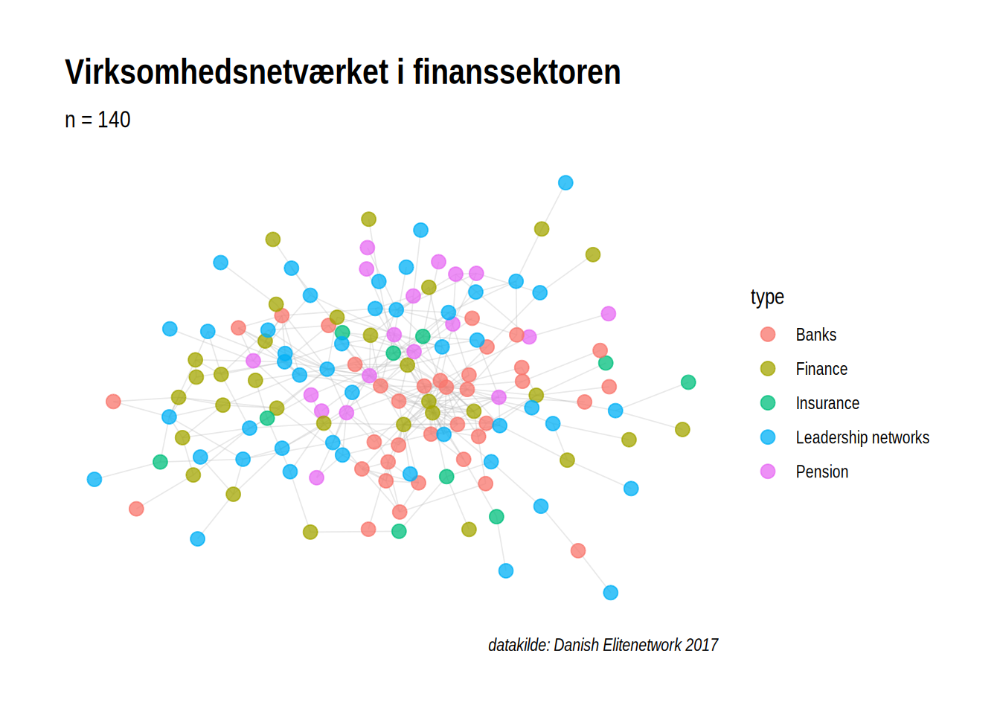
1.1 Farveskalaer for ikke kontinuerte variable
Lad os nu sige vi vælge en anden farveskala: Til det skal vi have fat i et scales_* element.
scale_color_* og scale_fill_* er de to scale elementer vi skal bruge for at ændre farveskalaen på color og fill:
med scale_*_manual() kan man sætte farverne selv.
med scale_*_brewer() kan man bruge værdierne fra en defineret palette
kør fx RColorBrewer::display.brewer.all()
Lad os prøve en farveskala fra brewer
# enten
p + scale_fill_brewer(palette = "Set1") +
scale_color_brewer(palette = "Set1")
# eller i en linje
p + scale_color_brewer(palette = "Set1", aesthetics = c("color", "fill"))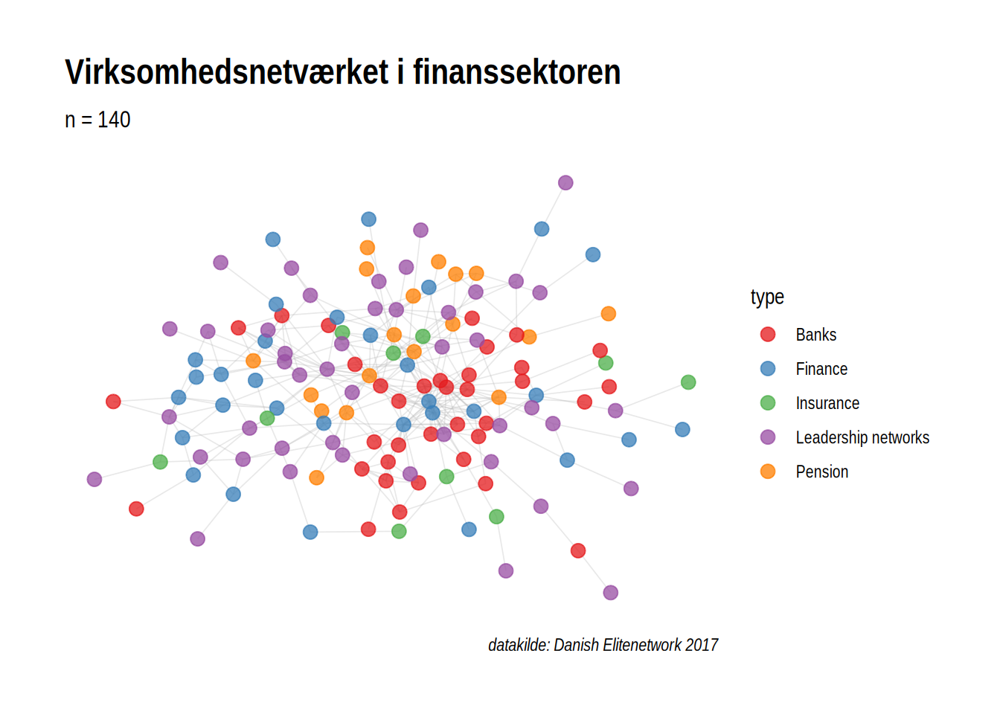
Vi kan også konstruere vores egen farve skale:
colors <- c("Finance" = "deeppink4", "Banks" = "steelblue1", "Pension" = "forestgreen", "Leadership networks" ="steelblue4", "Insurance" = "salmon1")og bruge den med scale_*_manual()
p <- p + scale_color_manual(values = colors, aesthetics = c("color", "fill"))
p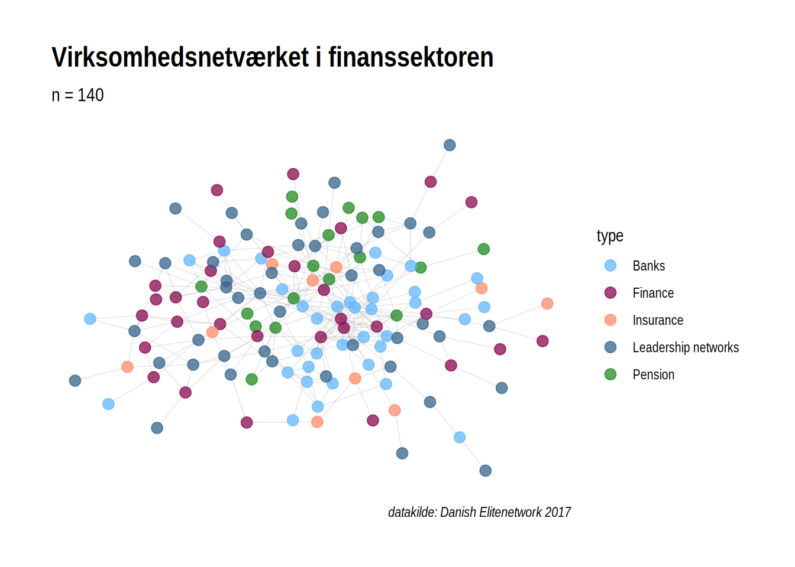
2) Ændrer legends
Som udgangspunkt får vores legend navn efter den variabel vi mapper. Det kan jo godt vi gerne vil ændre det:
Her kan vi bruge guides() funktionen + guide_legend()
p <- p + guides(fill = guide_legend(title = "Virksomhedstype"),
color = guide_legend(title = "Virksomhedstype"))
p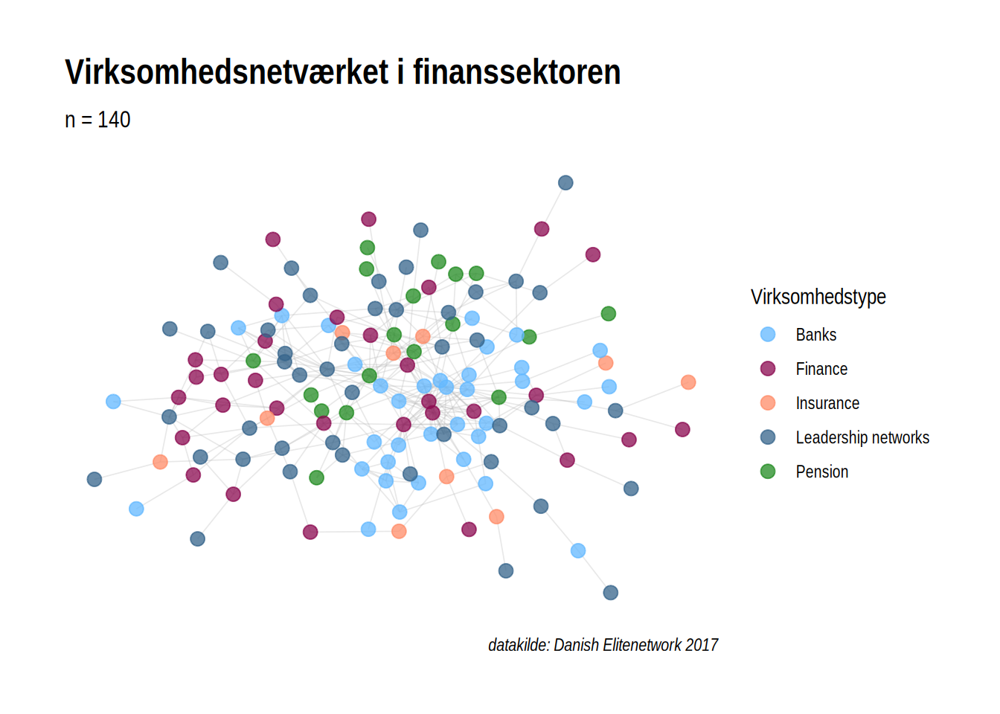
Vi kan også ændre på legends placering: (left, bottom, right (default))
p + theme(legend.position = "bottom")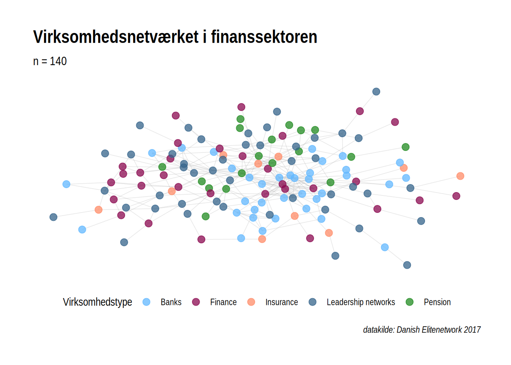
2.1 legend-label rækkefølge og label-værdier
Hvis vi gerne vil ændre rækkefølgen af værdierne på vores legend kan vi definere det i scale_*_* elementet for både color og fill samtidigt.
p + scale_color_manual(values = colors, breaks = c("Finance", "Insurance", "Banks", "Pension", "Leadership networks"), aesthetics = c("color", "fill"))Scale for colour is already present.
Adding another scale for colour, which will replace the existing scale.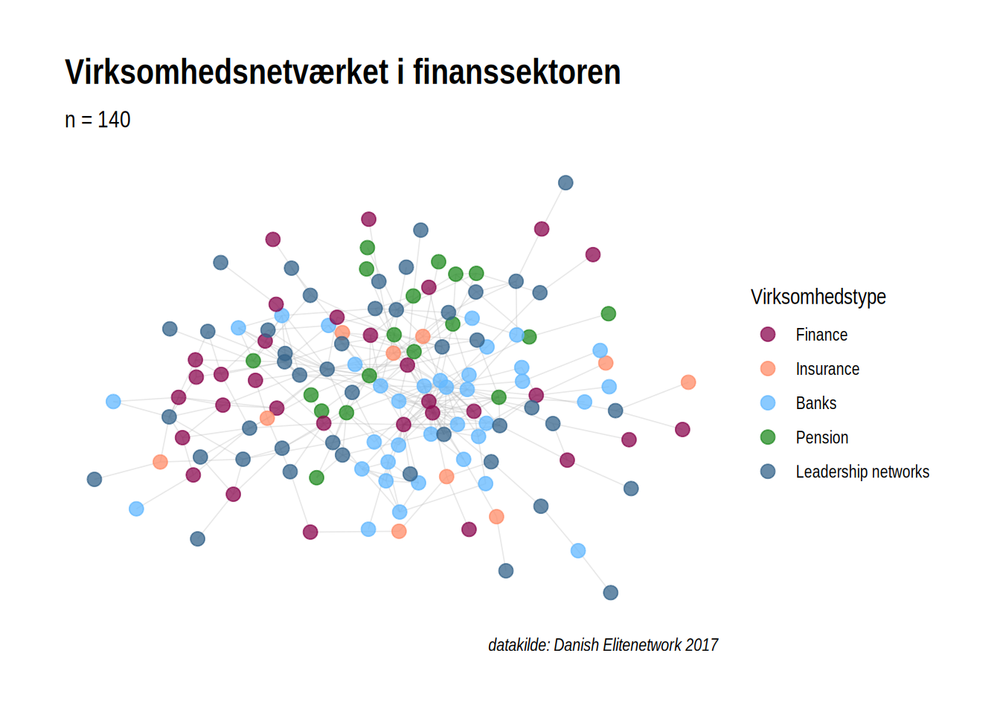
Vi kan også ændre navnene:
p <- p + scale_color_manual(values = colors,
breaks = c("Finance", "Insurance", "Banks", "Pension", "Leadership networks"),
labels = c("Finans", "Forsikring", "Banker", "Pension", "VL-grupper"),
aesthetics = c("color", "fill"))Scale for colour is already present.
Adding another scale for colour, which will replace the existing scale.p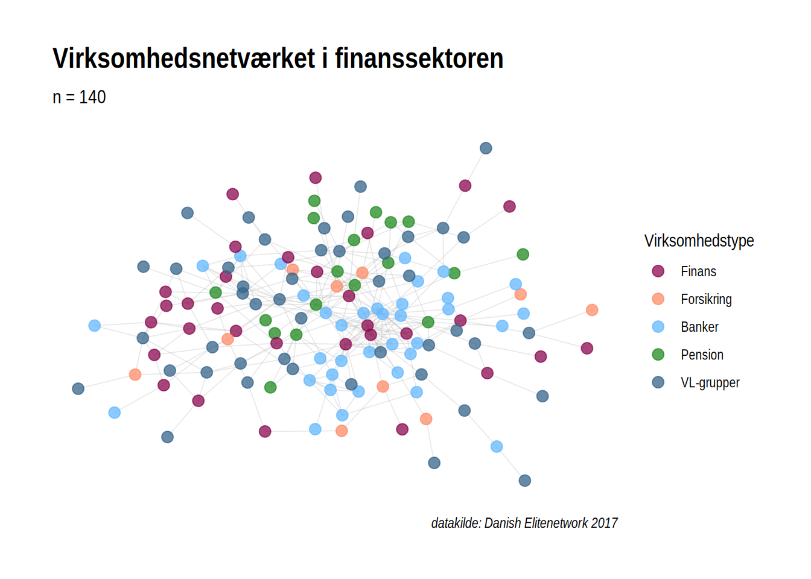
Visualisering 3.0 - ‘mapping aesthetics’ med kontinuerte variable
Lad os beregne betweenness centralitet i vores netværk og lave en rank variabel også
net_affil_l <- net_affil_l %>%
mutate(bet = centrality_betweenness(normalized = T),
bet_rnk = bet %>% desc %>% dense_rank)Vi gør det samme for closeness (fordi vi skal bruge det senere)
net_affil_l <- net_affil_l %>%
mutate(clo = centrality_closeness(normalized = T),
clo_rnk = clo %>% desc %>% dense_rank)1) Size efter et kontinuert mål (fx. betweenness)
Her sætter vi fill uden for vores mapping og giver den en konstant værdi, og sætter i stedet size ind i mapping’en og lader den følge betweennes værdien
p <- ggraph(net_affil_l) +
geom_edge_link0(color = "grey70", width = 0.3, alpha = 0.3) +
geom_node_point(shape = 21, alpha = 0.75, fill = "salmon2",
mapping = aes(size = bet)) +
theme_graph() +
labs(title = "Virksomhedsnetværket i finanssektoren",
subtitle = paste0("n = ", vcount(net_affil_l)),
caption = "datakilde: Danish Elitenetwork 2017")Using "stress" as default layoutp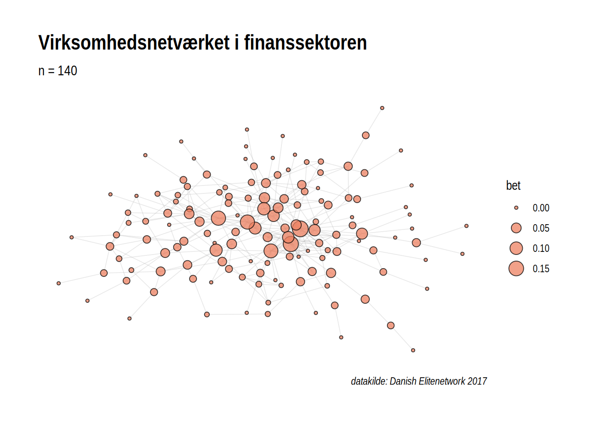
Vi kan også lade størrelse være styret af betweenness og stadige have farve efter sector:
med scale_color_* vælger vi farveskala (her kan vi også sætte legendnavnet med name =)
med scale_size_* vælger vi størrelsesskalaen for punkterne. Da betweenness er et kontinuert mål, bruger vi size_scale_continous(), hvor vi kan sætte en range = c(min, max)
p <- ggraph(net_affil_l) +
geom_edge_link0(color = "grey70", width = 0.3, alpha = 0.3) +
geom_node_point(shape = 21, alpha = 0.75,
mapping = aes(size = bet, fill = type)) +
scale_fill_brewer(name = "Virksomhedstype", palette = "Set1") +
scale_size_continuous(name = "Betwenness centrality", range = c(1,8)) +
theme_graph() +
labs(title = "Virksomhedsnetværket i finanssektoren",
subtitle = paste0("n = ", vcount(net_affil_l)),
caption = "datakilde: Danish Elitenetwork 2017")Using "stress" as default layoutpVisualisering 4.0 - rækkefølgen af noder.
Som I kan se plotter den noderne i den rækkefølge de har i netværksobjektet. Her kunne vi måske godt tænke os at de centrale noder bliver plottet til sidst, så de ligger ‘øverst’ på lærredet.
Det er der desværre ikke nogen ‘nem’ måde at gøre på, men vi kan bruge en funktion fra ggraph til at lave et layout først, som vi kan sortere.
layout <- create_layout(net_affil_l, "stress")nu har vi x og y koordinaterne for alle noder samt også deres vertex attributes i et tibble objekt:
names(layout) [1] "x" "y" "circular"
[4] "name" "comp" "type"
[7] "bet" "bet_rnk" "clo"
[10] "clo_rnk" ".ggraph.orig_index" ".ggraph.index" head(layout)# A tibble: 6 × 12
x y circular name comp type bet bet_rnk clo clo_rnk
<dbl> <dbl> <lgl> <chr> <int> <chr> <dbl> <int> <dbl> <int>
1 1.46 2.11 FALSE A/S DANSK ER… 1 Fina… 3.29e-4 88 0.252 68
2 -2.89 -1.91 FALSE Alm. Brand 1 Insu… 1.44e-2 53 0.216 93
3 2.60 -0.421 FALSE AP Pension 1 Pens… 1.83e-2 43 0.304 26
4 0.677 -0.159 FALSE Arbejdernes … 1 Banks 8.82e-2 8 0.385 3
5 -0.450 -0.367 FALSE ARKITEKTERNE… 1 Pens… 1.12e-2 58 0.288 41
6 1.05 -1.05 FALSE BI Holding 1 Fina… 1.30e-1 5 0.369 5
# ℹ 2 more variables: .ggraph.orig_index <int>, .ggraph.index <int>Vi kan nu sortere (arrange()) layoutfilen efter betweenness (bet) før vi ‘sender den’ til ggraph() funktionen. Det giver dog et nyt problem, da koordinaterne for edges ikke automatisk følger med:
layout %>% arrange(bet) %>% ggraph() +
geom_edge_link0(color = "grey70", width = 0.3, alpha = 0.3) +
geom_node_point(shape = 21, alpha = 0.75,
mapping = aes(size = bet, fill = type)) +
scale_fill_brewer(name = "Virksomhedstype", palette = "Set1") +
scale_size_continuous(name = "Betwenness centrality", range = c(1,8)) +
theme_graph() +
labs(title = "Virksomhedsnetværket i finanssektoren",
subtitle = paste0("n = ", vcount(net_affil_l)),
caption = "datakilde: Danish Elitenetwork 2017")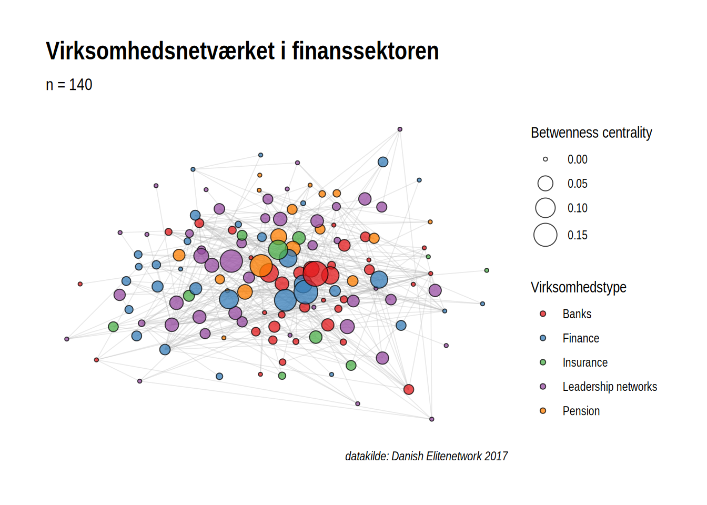
UPS!!! Det går helt galt med edges, som nu ikke længere passer med noderne. Det er fordi koordinaterne nu er sorteret efter betweenness, mens ‘referencen’ til linjerne (from - to) stadig referer til de ‘tidligere’ række numre
Jeg har skrevet en funktion get_edge_coord() som sources med get_edge_coord.R
hvis I sætter den funktion ind i geom_edge_link0 elementet som data = get_edge_coord('netværksobjeltet', 'layout tibble'), så beregner den de rigtige koordinater, som så skal mappes over x, y, xend og yend i aes()
p <- layout %>% arrange(bet) %>% ggraph() +
geom_edge_link0(data = get_edge_coord(net_affil_l, layout), mapping = aes(x = x, y = y, xend = xend, yend = yend), color = "grey70", width = 0.3, alpha = 0.3) +
geom_node_point(shape = 21, alpha = 0.75,
mapping = aes(size = bet, fill = type)) +
scale_fill_brewer(name = "Virksomhedstype", palette = "Set1") +
scale_size_continuous(name = "Betwenness centrality", range = c(1,8)) +
theme_graph() +
labs(title = "Virksomhedsnetværket i finanssektoren",
subtitle = paste0("n = ", vcount(net_affil_l)),
caption = "datakilde: Danish Elitenetwork 2017")
p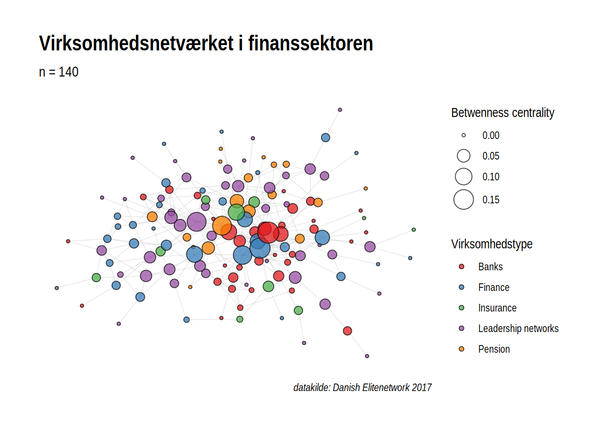
Skrifttyper, tekststørrelser mv.
Det er meget simpelt efterfølgende at ændre på teksttype og størrelse i ens plot.
base_family sætter skritftypen (serif, sans, mono) for hele plottet
base_size sætter skriftstørrelsen for hele plottet
title_size, sætter titel skrifstørrelse,
subtitle_size, sætter skriftstørrelse for underoverskrift
osv.
p <- p + theme_graph(base_family = "serif", base_size = 12, title_size = 16, subtitle_size = 10)
p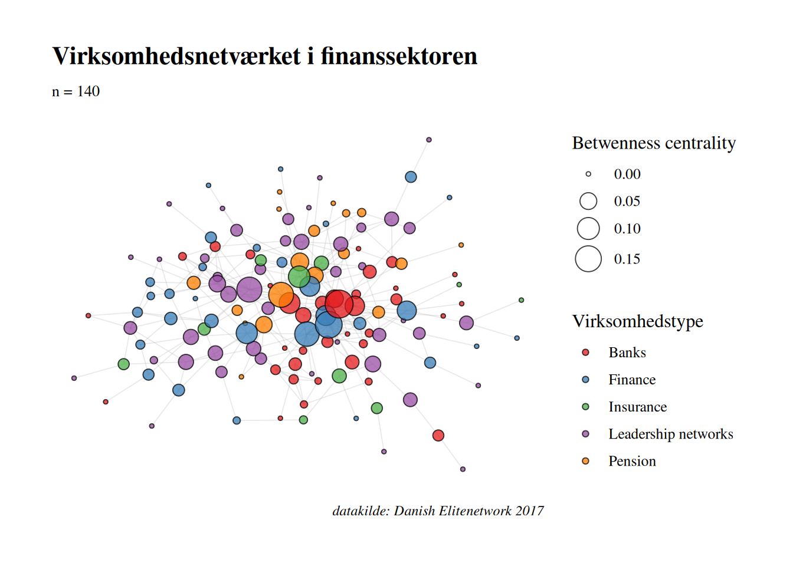
Labels på et plot…! geom_node_label() og filter =
Vi har sjældent brug for at sætte label på alle noder, men vi vil måske gerne sætte labels på de 3 mest centrale noder? Eller på et udvalg af noder. Til det kan vi bruge geom’et geom_node_label() og ‘mappe’ vertex attribute’en name hen over koordinaterne.
Fordi vi ikke vil plotte alle label, bruger vi parameteret filter i aes():
p + geom_node_label(mapping = aes(filter = bet_rnk<=3, label = name))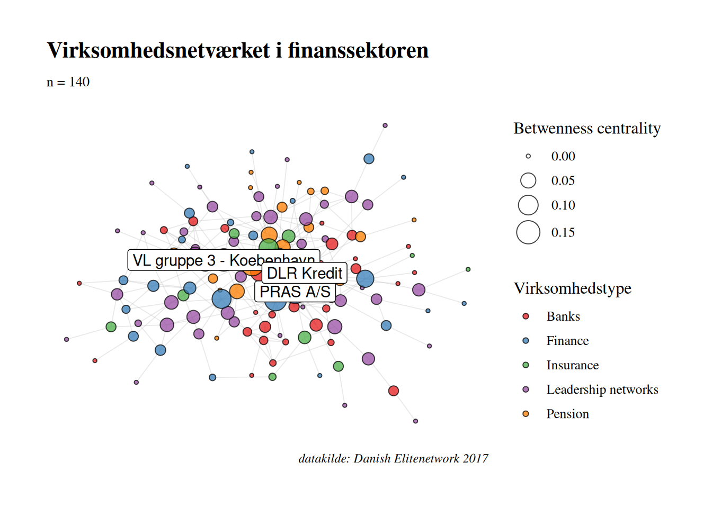
Hvis labels ligger oven i hinanden kan det være nyttigt at tilføje parameteret repel = TRUE.
p + geom_node_label(mapping = aes(filter = bet_rnk<=3, label = name), repel = T)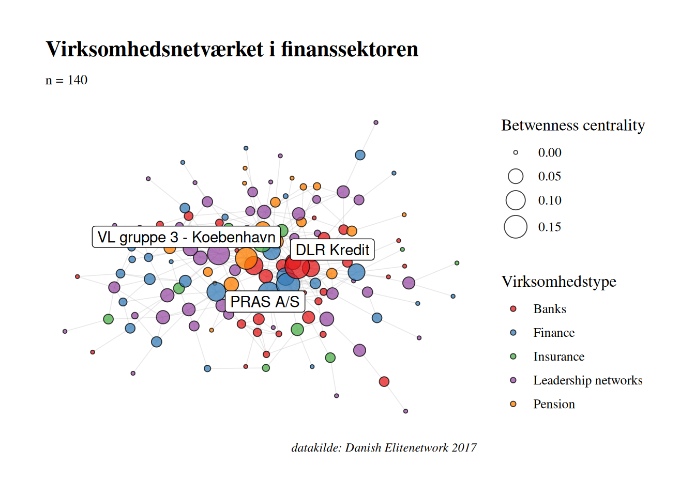
Måske er mine labels for store? Vi kan ændre på størrelsen og også på deres gennemsigtighed (alpha) samt på text typen family så den passer til resten af plottet
p <- p + geom_node_label(mapping = aes(filter = bet_rnk<=3, label = name), size = 3, alpha = 0.8, family = "serif", repel = T)
pdet ser efterhånden meget godt ud… Måske er jeg ked af at størrelsen på cirklerne i min color legend er så små. Det kan jeg også justere på med guides() og guide_legend() :
Override legend aesthetics…
p <- p + guides(fill = guide_legend(override.aes = list(size = 4)))
p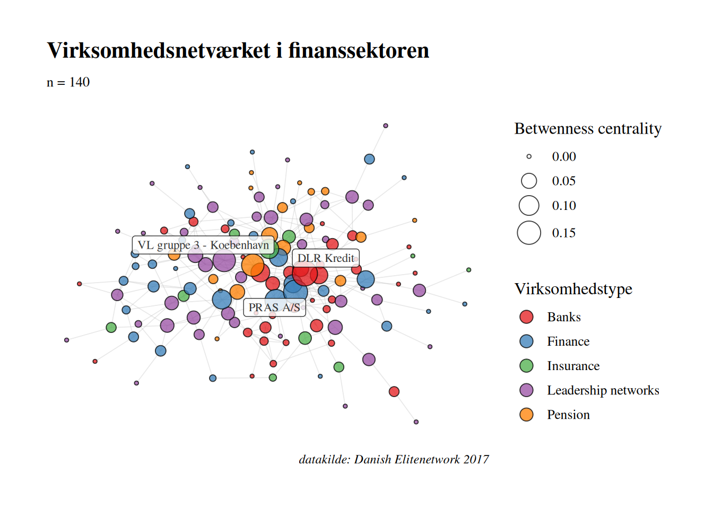
Lad os gemme det plot også :
ggsave(filename = "output/betweennescentralitet_plot.png", plot = p, height = 7, width = 9)Standard units på height og width er inches (in). Måske er det lettere for os at bruge cm.
ggsave(filename = "output/betweennescentralitet_plot.png", plot = p, height = 16, width = 20, units = "cm")Kig på filen og juster størrelsen, så forholdet mellem plot og lærred (og tekst- og punktstørrelse mv.) ser fornuftigt ud.
Sammensætning af plots med ggarrange
Lad os efter samme fremgangsmåde som før lave et plot med closeness i stedet:
p_clo <- layout %>% arrange(clo) %>% ggraph() +
geom_edge_link0(data = get_edge_coord(net_affil_l, layout), mapping = aes(x = x, y = y, xend = xend, yend = yend), color = "grey70", width = 0.3, alpha = 0.3) +
geom_node_point(shape = 21, alpha = 0.75,
mapping = aes(size = clo, fill = type)) +
geom_node_label(mapping = aes(filter = clo_rnk<=3, label = name), size = 3, alpha = 0.8, family = "serif", repel = T) +
scale_fill_brewer(name = "Virksomhedstype", palette = "Set1") +
scale_size_continuous(name = "Closeness centrality", range = c(1,5)) +
theme_graph(base_family = "serif",
base_size = 12,
title_size = 16,
subtitle_size = 10) +
labs(title = "Virksomhedsnetværket i finanssektoren",
subtitle = paste0("n = ", vcount(net_affil_l)),
caption = "datakilde: Danish Elitenetwork 2017") +
guides(fill = guide_legend(override.aes = list(size = 4)))
p_clo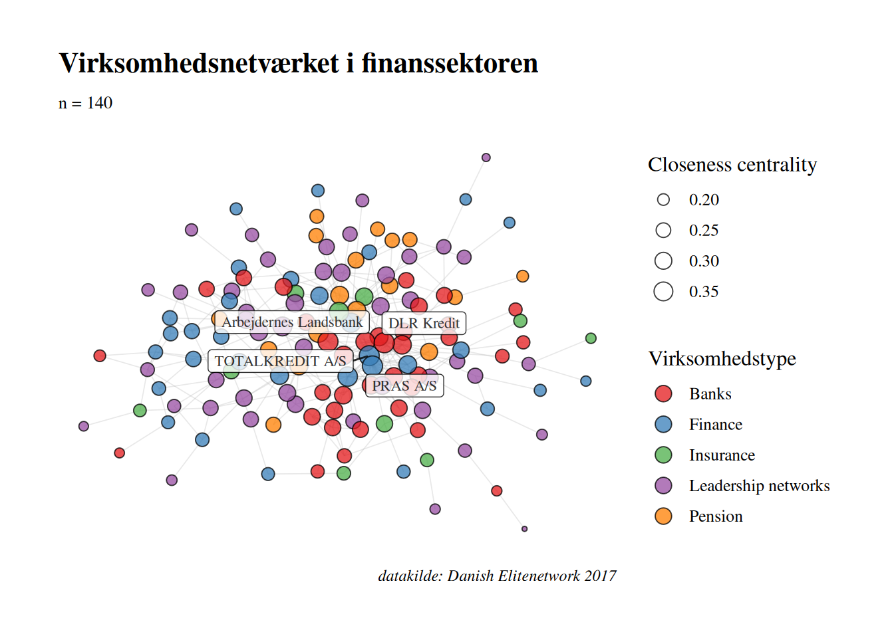
Med funktionen ggarrange() fra ggpubr kan vi sætte plots sammen:
Først vil vi måske gerne lige fjerne legends for size, da de nu betyder to forskellige ting:
p <- p + guides(size = "none")
p_clo <- p_clo + guides(size = "none")og ændre overskriften:
p <- p + labs(title = "Betwenness", subtitle = "", caption = "")
p_clo <- p_clo + labs(title = "Closeness", subtitle = "", caption = "")ggarrange(plotlist = list(p, p_clo), common.legend = T, legend = "right")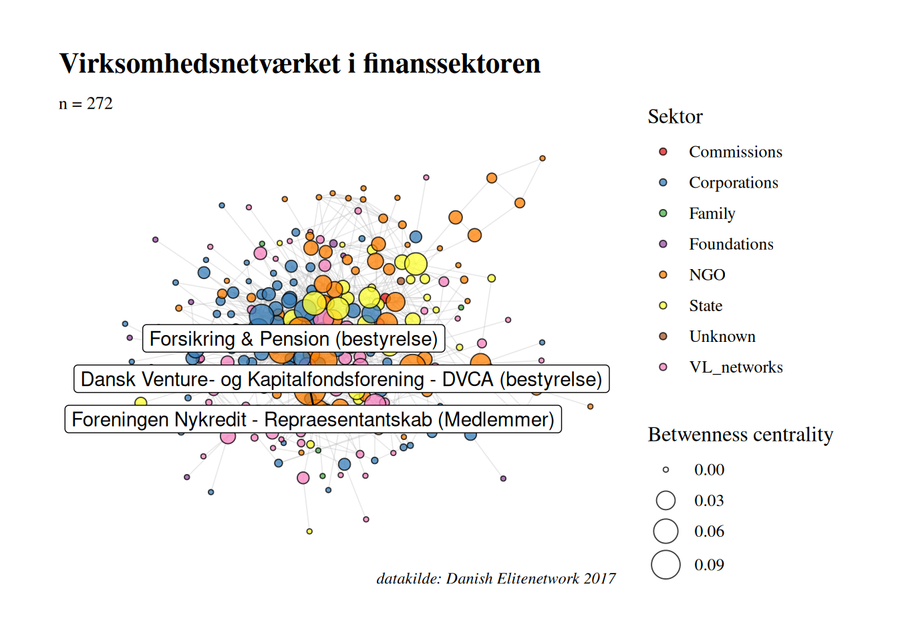
Visualisering af forskellige mål… (med ggplot)
Vi kan beregne en række centralitetsmål:
metrics <- tibble(
name = V(net_affil_l)$name,
type = V(net_affil_l)$type,
degree = degree(net_affil_l),
betweenness = betweenness(net_affil_l, normalized = T),
local_betweenness = betweenness(net_affil_l, cutoff = 2, normalized = T),
closeness = closeness(net_affil_l),
brokerage = 1/constraint(net_affil_l)
) Korrelationen mellem to forskellige mål
Vi kan fx plotte korrelationen mellem betweenness og brokerage
metrics %>%
ggplot() +
geom_point(aes(x = brokerage, y = betweenness, color=type, size=degree)) +
#geom_label(aes(x = brokerage, y = closeness, label = name2)) +
scale_color_manual(values=colors) +
scale_x_continuous(breaks = seq(1,max(metrics$brokerage), 1), name = "1/Burts constraint") +
scale_y_continuous(name = "Betweenness") +
guides(color = guide_legend(override.aes = list(size = 4), title = "Virksomhedstype"),
size = guide_legend(title = "Degree centralitet")) +
theme_bw(base_family = "serif")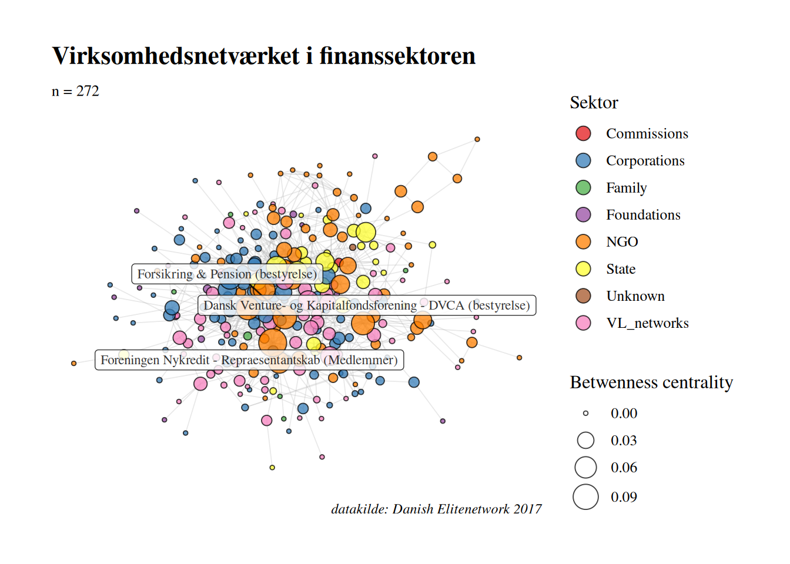
Et mål, men delt op på en variabel - facet_wrap()
Der er ikke ret mange noder i kategorierne Commissions og Unknown, så dem filterer vi lige fra her.
Vi kan nu prøve at se hvor stor en andel af noderne i de forskellige sektorer, der ligger hhv. højt og lavt på fx brogerage.
metrics %>%
ggplot() +
geom_density(aes(x = brokerage, fill=type)) +
labs(y='share') +
facet_wrap(~type) +
scale_fill_manual(values=colors) +
guides(fill = "none") +
theme_minimal(base_family = "serif") +
theme(strip.text.x = element_text(size = 12, face = "bold")) 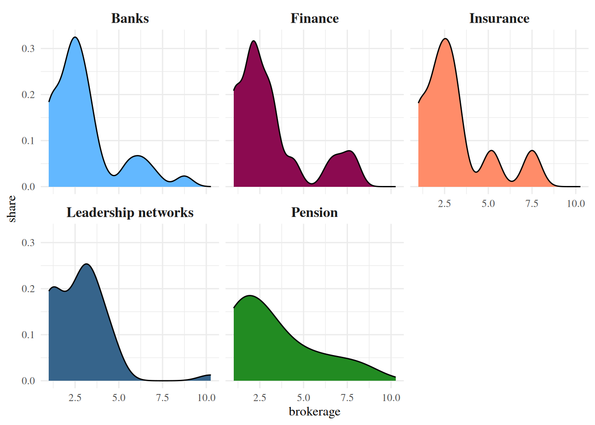